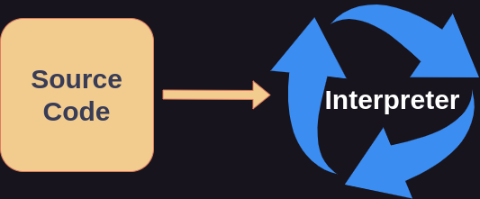
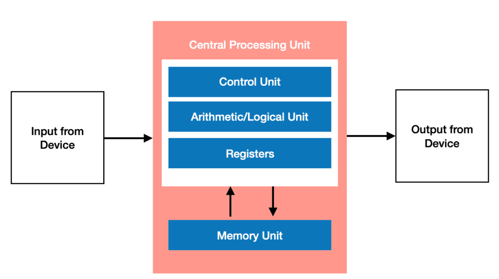
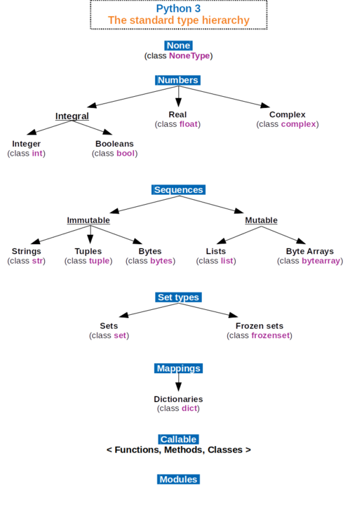

Introduction
About Me
My name is Steve. I am a computer science major who is very passionate about programming and computer science in general and I hope to one day obtain a master's degree in either computer science or math. I also love film, fashion, and hiking/camping.
Who This Book Is For
The book is for any one who isn't familiar with coding but with like to begin learning. This book is written specifically with a teenage audience in mind, however any new programmer will benefit form the contents of this book. The book is meant to instill the core concepts of programming using Python, however these concepts can be applied to many other languages and computer systems. Many Python specific things will be glossed over in this book to make it as generally applicable as possible, however, the Python documentation is often linked for further reading.
Book Structure
Every chapter corresponds to a core concept of programming. The order of these topics is mostly ordered in a way that allows for concepts to be built upon one another foundationally. Each section contains examples, diagrams, and most end in a Further Reading section that links to other documents that extend a topic beyond the scope of the book. The second section of the book contains outlines of popular and noteworthy projects that may be worked on to reinforce coding practices and uses. The glossary at the end contains many example programs organized by concepts illustrated. The glossary also contains tables of vocabulary words, definitions, and hotkeys. The first use of a vocabulary words are italicized throughout the book and can be found in the glossary.
Work In Progress
This book is a constant work in progress and is continually being edited and changed.
Getting Started Programming
What Is Programming?
Programming is essentially providing instructions to a system to accomplish a task or receive a result. Everything you see see when you use your desktop computer, laptop, tablet, or phone are all the result of programming. Every aspect of the operation of your electronic devices, even your home appliances like your toaster and fridge, can contain code being executed. Code controls the electricity coursing through the circuitry of a device to to the pixels of a screen that change colors every fraction of a second. Every button click and key press in your favorite app or preferred operating system executes code that someone wrote to interact with other systems someone else wrote to do what that button click does.
Programming involves taking very small and precise steps. But all those steps culminate in every website, video game, operating system, or video you've ever seen on a computer screen. Everyone of those steps add up to programs that are millions of lines long that hundreds of people have worked on and contributed to for decades. However, many programs that have been used for decades are relatively small. Often one person has an idea that they believe will make their or others' lives easier and executes it by writing a program that does that thing. To learn to program it takes understanding that an idea can be realized and the drive to make that idea a reality through learning.
Programming Languages
Declarative vs Imperative
Programming is essentially the act of writing something that a computer understands and will have a computer do something based on what is written. The rules by which to write something that a computer understands is called a programming language. There are two overarching types of languages. Also known as paradigms.
- Declarative Languages
- Imperative Languages
A declarative language describes how something is, or more technically it defines a state that the computer must reach. A declarative statement in human language could be "The ball is red". Some examples of imperative languages are:
- YAML
- HTML
- SQL
An imperative language offers the instructions or commands to a computer it needs to perform to accomplish a task. An imperative statement in human language could be, "Paint the ball red." Some examples of declarative languages are:
- C
- Java
- Rust
And many programming languages have the capability to be both declarative and imperative. There are many programming languages that have been designed and created in history by individuals, groups, organizations, and corporations all over the world. However, the book will use imperative programming with the programming language Python to teach the basic concepts of programming. By understanding basic programming concepts, the languages you choose to write in will become secondary.
Compiled vs Interpreted
The only thing a computer truly understands is 0s and 1s. Binary code. Also known as machine code or machine instructions. All the code written has to be somehow converted to 0s and 1s. So, along with the languages, programmers also design and create programs used to convert the code to binary. There are two primary ways of converting code to what a computer understands.
Compilers
Compiled languages are languages where the source code of the language is passed to a compiler, which converts the source code to an executable or binary file. Programs are compiled to be run on a specific machine or hardware. Therefore, to be run on another machine, it must be compiled for that machine, and every other machine it is to be ran on.
 The path of code from source to executable.
The path of code from source to executable.
Compiled languages are often used to control hardware itself. Compiled languages are often used for:
- Robotics
- Operating Systems
- Embedded Software
- Device Drivers
- Automotives
- Aeronautics and Aerospace
- Video Game Engines
Some examples of compiled languages are:
- C
- C++
- Rust
- Java
- Go
Interpreters
Interpreted languages are languages where the source code of the languages is passed to an interpreter. The interpreter does not convert the source code to a binary file, but instead runs the source code itself line by line. Therefore, the source code of an interpreted language can be ran on any machine which runs the interpreter. The source code of interpreted languages is often referred to as scripts, and the languages scripting languages. This makes interpreted programs easier to run in more places, this is called portability. And interpreted languages are generally more portable than compiled ones.

Source code being given to the interpreter to be ran.
Interpreted languages are often used for:
- Data Science and Statistics
- Artificial Intelligence
- Computing System Administration
Some examples of interpreted languages are:
- Python
- JavaScript
- Shell
- Powershell
- Ruby
- Lua
Why Python?
Python is an interpreted programming language that is commonly used to teach new programmers the basics. This is because Python's design makes it a simpler language to read and write.
Syntax
Syntax is the rules by which something is written. For example, in English adjectives come before nouns; and verbs tend to come before subjects. This is an example of English's syntax. However, in Spanish adjectives tend to come after verbs. This is an example of Spanish's syntax and how human languages can differ in syntax. The same is true for computer languages; the rules of writing something with the same meaning differs between languages. However, once you understand the basic concepts of programming, beginning to learn a new language is only a matter of getting familiar with its syntax.
Portability
Python is portable, as in, the interpreter can be ran in many places, such as a desktop, laptop, phone, or tablet.
Popularity
Python is an extremely popular language that is used across the world by both individuals and large companies and organizations.
This was just an introduction to the different programming paradigms and types of programming languages. There are many more categories languages can be divided and subdivided into. These categories aren't discussed here because they require a more advanced understanding of how programming languages work and are designed.
Python's design is what makes it suitable for both beginners and experienced programmers; and its design is why it is the most popular programming language in the world as of this writing. Next you will learn what programs can be used to actually write code in any given programming language, including Python.
Further Reading
Text Editors, IDEs, and PDEs
Ultimately, all the code we write is just text. Instructions that we type and give to a computer to perform. However, there are different kinds of programs we can use to write code more easily, and efficiently.
Features Offered
There are features common to these types of programs that make writing code easier and more efficient. For example:
Syntax Highlighting
Syntax highlighting is a feature that colorizes different parts of the code to make it more easily readable by a human. The code snippets in this book are syntax highlighted.
Code Completion
Code completion is a feature that allows the program being used to write code to auto-complete code being written, or offer suggestions based on the code that you've already written. This is useful for saving time when writing.
Built In Interpreters
Some programs used for writing code allow us to run and test our code in the same program used to write the code. This is useful so we don't have to go to another program every time we want to test or run something.
Plugins
These programs usually support the use of plugins, which are essentially add-ons that add even more functionality.
Text Editors
The most basic kind of program we can use to write code are text editors. There are programs that simply allow us to write and save text files and not much more. A common text editor installed by default in Microsoft Windows is Notepad. A more feature and rich text editor, one designed specifically to write code is *Notepad++". Notepad++ offers syntax highlighting and allows the use of plugins to extend its capabilities. Here is a list of commonly used text editors:
- Notepad
- Vim
- Notepad++
- Geany
- Notepadqq
- Sublime
- Emacs
Integrated Development Environments or IDEs
The next step above a text editors are integrated development environments or IDEs. IDEs offer everything text editors do and more. IDEs usually offer features that would be found in an entirely other program, and give the programmer the ability to stay in the editor instead of having to switch programs frequently. Some of these features are:
- Code interpretation or compilation
- Debugging
- Version Control
IDEs usually are designed for use with a a specific programming language, however IDEs exist that are used for programming in general. Also ,since IDEs are so much more feature rich that text editors, they usually are more complicated and tend to have a steeper learning curve. Some examples of popular IDEs used today are:
- Visual Studio Code
- PyCharm
- Eclipse
Personalized Development Environments or PDEs
There is a lesser known concept of a personalized development environment or pde. This is essentially a text editor that has been customized extensively by installing plugins and other software. So, it is a text editor that has been personalized by the user for their own, specific use. Two editors that are commonly personalized by users are VIM and Emacs.
These types of programs are plentiful and it is common practice to try as many as one likes to find one that suits their preferences and the language they are writing in.
Further Reading
Integrated Development Environment
Installing Python
Windows
The Python interpreter can be downloaded for Windows from the Python's official website.
https://www.python.org/downloads/
Once the installer is downloaded, go to the directory it was downloaded to and execute it.

The Python installer I downloaded to my computer.
Once the installer is launched you will be greeted by this screen:
There are two options when installing.
Admin Privileges
This option should be enabled assuming you are using your personal computer. Admin privileges in Windows generally allow you to install programs and alter specific files. Installing the Python interpreter with admin privileges will allow your scripts you write and run to have greater access to your computer, however this must be done responsibly; or else you may damage your operating system.
Path Variable
This option should be enabled. A path variable is a variable that contains every directory that your user can execute files from no matter what directory the user is currently in. Essentially, when this option is checked, the directory python is installed to will be added to your path variable, so you can execute the interpreter from anywhere.
There are some things installed alongside the interpreter by default like pip. Pip is a Python package manager. It will be discussed at the end of the book in the "And More..." section.
Once the interpreter is installed you will be greeted with a success screen.
Linux
On the vast majority of Linux distributions, Python is already installed by default.
Further Reading
Python docs on Windows Python installation
Executing Python Code
There are two ways Python code can be ran or executed.
Script Mode
Script mode is where any entire program or script is written from beginning to end and then saved as a file. That file is then passed to the interpreter for the interpreter to execute the script, line by line, from beginning to end.
Write And Save A .py File
For the Python interpreter, the file should be save as a .py file. For example say I wrote a Python script named myscript, I would save this file as myscript.py.
Executing A Python Script
Depending on your preference you can either run your script in an IDE or the terminal.
If using the terminal, the command python calls the interpreter. Now this command takes an argument that is the name of the script file. So, if I wanted to run myscript.py I would make sure I am in the directory that contains the file and type into the terminal python myscript.py and press enter. This calls the interpreter, and gives it my script to run.
Interactive Mode
Interactive Mode is where the interpreter provides a shell or an environment that allows us to execute code as it is given to the interpreter. This mode is generally used for things like quick math or small tests.
Your IDE may provide a window where a shell is visible. Otherwise, to reach the interactive mode you simply type python into a terminal without any arguments and hit Enter. Whether your IDE provides a shell or you reach a shell in your terminal you will see a prompt. A prompt denotes a new line where commands or code will be entered. You should see >>> as your prompt when in interactive mode. From here you can type any Python code you like, and every time you hit Enter, that line, and that line alone, will be interpreted.
Data Types & Variables
What Is Data?
Data is simply information. A computer stores data or information in Random Access Memory (RAM), in secondary storage like a hard drive or solid state drive, or in the Central Processing Unit (CPU). When programming, we are primarily using data that is being stored in memory. All the data in your computer's memory are bits: zeroes and ones. This is all a computer truly knows. The same pattern of bits can be defined to represent different things. Programming languages keep track of where the data is and what is represents. What kind of thing the data represents is known as a type.
 An extremely simplified layout of a computer known as the Von Neumann architecture
Data Types
Python has a number of data types that programmers can use to accomplish their task. They are listed below:
| Name | Type | Description | Mutable | Examples |
|---|---|---|---|---|
| Integer | int | Any integer | No | 7,10,24,-24,-8564, 103811 |
| Floating Point Number | float | Any decimal number | No | -73.38, 89.92, 1.0001 |
| Complex | complex | Any complex number | No | 11+7j, -4j |
| Boolean | bool | A truth value | No | True, False |
| String | str | A sequence of characters such as a word or sentence | No | "Steve", "Jenny", "I saw a balloon." |
| List | list | A list or array of the same data objects | Yes | ["Me,"You","Not Them"] |
| Tuple | tuple | A list or array of objects of any differing types | No | ("Me","You",1,2,4.8) |
| Dictionary | dict | A list of key-pair values | No | "Me":"Yes", "You":"Yes", "Them":"No" |
| Set | set | A list of key values | yes | set([3,5,7]) |
| Frozen Set | frozenset | An immutable set | no | frozenset[("me","you) |
| Bytes | bytes | A byte value | no | b'ab\xff' |
| ByteArray | bytearray | A list or array of byte values | Yes | bytearray(...) |

By Максим Пе - Own work, CC BY-SA 4.0, https://commons.wikimedia.org/w/index.php?curid=74062464
Visualizing Objects
Python groups bit patterns into objects. Objects are like boxes, that keep track of:
- What type of data is inside of it
- The literal value of the data
- Its location in memory
- How often the object is used
An object's type determines what its possible values are and what operations can be performed on it.
Python is known as an object oriented language. Keep in mind that not all programming languages utilize objects. In some languages, the programmer must keep track of the location of data, and what type that data is themselves. Due to the object paradigm, Python is a strongly typed language. In strongly typed languages, the data type of an object doesn't change implicitly. Essentially, data objects are like a box that exists somewhere in the computer's memory. This box contains the data itself, and everything the computer needs to know what that data means and to use that data. In the next section, we'll cover variables, which are used to give names to different objects.
Knowing the different data types a programming language offers allows you to know what ways the language allows you to represent and store information. Since many of the data types Python offers are unique to Python, such as Dictionaries, Sets, and Tuples, we will focus on types that can be found in programming languages more generally. Throughout the book we will focus on the numerical data types, strings, lists, and booleans extensively. In the next sections, we will learn how to name objects of any type using variables.
Further Reading
Variables
There are two ways to represent data values in python:
- Literal Values
- Variables
Literal Values
Literal Values are the values themselves. If, for example, I type 7 into my python interpreter I am using the literal value 7. If I enter 7+7. I am adding two literal values and will be returned 14.
Variables
Most programming languages allow programmers to assign variables to values. Variables are just names. We give the data names so that we can refer to the variables rather than the literal values. This makes the data easier to follow and change. Python has some restrictions on what variable names can be:
- A variable may only contain
- Lowercase letters
- Uppercase letters
- Digits
- Underscore
- Variables are case-sensitive.
- A variable may not begin with a digit
- A variable may not be a reserved word. Reserved words may be found using the command:
help("keywords")
Assignment
Variables can be assigned values using the assignment operator: =, with the variable name on the left and the value on the right. Operations will be covered in the next section. But for now know that in most programming languages = does not mean "equal to" or "is". It is an action that can be thought as "make" or "make equal to".
For example,
a = 7
could be said in words as "make a 7", "make a equal to 7", or "let a be 7".
And now if a is put into the interpreter it will return 7 because a is now 7 and will be treated as such.
Variables and Objects
Recall that in Python all data is organized into objects to help keep track of the data and what the data represents. When we apply our knowledge of Python objects, to what we know about variables and assignment, we can detail what's actually happening. In our previous example we assigned the variable name a to the integer object 7. Let's extend our previous example and assign something to a.
a = 7
b = a
If you recall the transitive property from mathematics you know that if a is 7, and b is a then b is also 7. Now what if we change a from 7 to something else or in other words reassign a?
a = 7
b = a
a = 11
What do you think is now the case? Since a is changed is b now changed as well? The answer reveals something important about variables and objects in Python.
References
In some programming languages the variable name is a location, in other words, in those languages a variables name is the name of a place that contains the data. Python IS NOT one of these languages. In Python variables are references. They refer to or point to a data object. These types of variables are sometimes called pointers.

Diagram of our variable names pointing to different objects
In short, in Python variables are only names. When you assign a variable, you are simply naming some data object.
Let's return to our previous example:
a = 7
b = a
a = 11
In this Python code snippet, the following occurs:
- a is pointed to an integer object with a value of 7.
- b is pointed to the value that a point to (7).
- a is pointed to a new integer object with a value if 11.

So, if you enter b into the interpreter, it will return 7. This is because when you assign b to a, you are simply giving the object 7 two different names: a and b. In other words, you are point b to the same data object a is pointing to. Then, when a is assigned to 11, it is being pointed to a new data object, but that does not change what b is pointing to, so b remains 7.
Variable Naming Conventions
Outside of the Python keywords and rules we can name variables whatever we please. But what is a good variable name. In larger programs, good names are important to keep the code readable. So you, or another person unfamiliar to the code can easily read, understand, and follow it.
Your variable names should be:
- Brief
- Descriptive
- Unique
A common variable naming convention used is called camelCase. camelCase separates multiple words in a name by capitalizing the last word of the variable name. Another common convention is snake_case. Where the words in the name are separated by underscores. snake_case is commonly used in Python and is what will be used in this book.
This section introduced variables, which in Python, are names or references to objects. In the next sections operations that can be used on variables, and thus objects, will be introduced.
Further Reading
Arithmetic Operations
Arithmetic Operations
There are a number of operations in mathematics we can use to calculate values using numbers. These are arithmetic operations. The arithmetic operations available to use in Python are listed below:
| Operator | Description | Example | Result Returned |
|---|---|---|---|
| + | Addition | 7+7 | 14 |
| - | Subtraction | 70-1 | 69 |
| * | Multiplication | 7*7 | 49 |
| / | Floating-point division | 7 / 2 | 3.5 |
| // | Integer or Truncated Division | 7 // 2 | 3 |
| % | Modulus or Remainder of Integer Division | 7 % 3 | 1 |
| ** | Exponentiation | 7 ** 2 | 49 |
These examples are performing the operations on literal values as in the objects themselves not variables. Operations can be performed on both literal values and variables. Her are more examples:
Addition and Subtraction
>>> a = 6
>>> a + 4
10
Addition and subtraction works as expected. Note the use of both literal values and variables. And we can include as many operands as possible. An operand is any object being operated on by an operation.
>>> 7+10-2+11-14+a
18
Multiplication
Multiplication is similar. For example:
>>> 10*7*15*5
5250
Division
Division is a different story since there are different styles. There is floating point division: /. And division with truncation: //. Truncation is just removing everything after the decimal point. Truncating is essentially just rounding down to the nearest integer in the case of positive numbers and rounding up in the case of negatives.
Floating Point Division
Floating point division is division that will return the answer of division including if it is a floating point (a decimal number). For example:
>>> 7.5 / 2
3.75
Division With Truncation
Truncation will remove everything after the decimal point. It is essentially rounding or removing any remainder. For example:
>>> 7.5 // 2
3.0
Modulus
Modulus or mod for short simply returns the remainder of division. For example:
>>> 7.5 % 2
1.5
Exponentiation
Exponentiation is raising a number by an exponent. The number being raised, or the base, goes on the left. And the exponent is on the right. For example:
>>> 3 ** 2
9
Assignment Operators
Assignment operators are operators that allow us to both conduct an arithmetic operation on a variable and assign the result to the variable with a single operation. In other words, the arithmetic operation and assignment operation are combined into one step.
The assignment operators found in Python are listed below
| Operator | Description |
|---|---|
| = | Assigns value to variable |
| += | Adds value and assigns result |
| -= | Subtracts by value and assigns result |
| *= | Multiplies by value and assigns result |
| /= | Divides by value and assigns result |
| **= | Raises by power and assigns result |
| %= | Computes modulus between value and assigns result |
| // | Floor divides by value and assigns result |
Not every operator will be given an example for the sake of brevity, but the concept is the same for all. Let's use multiplication for our example. Consider:
>>> myNumber = 7
>>> myNumber = myNumber * 7
>>> myNumber
49
Here myNumber is assigned to 7. Then it is assigned to itself times 7 which is 49. And when returned it is now assigned to 49. Where it is being assigned to itself times 7 can be combined into a single operation with an assignment operator.
>>> myNumber = 7
>>> myNumber *= 7
>>> myNumber
49
The result of this code block is the same, however the multiplication and reassignment of myNumber is combined into the *= operator.
This section described Python's arithmetic operations. To see more examples of these operations in use check the appendix. The next section will cover logical operations.
Further Reading
Logical Operations
What is Logic?
Logic is a kind of math that is likely different than what you are familiar with. Logic is used to determine whether something is true or false. And operations in logic don't use numbers, but only truth values. As in, true or false. Recall, that computers can only truly understand 0s and 1s. Naturally, logic is applicable to the design and study of computers. Since there are only two possible values, 0 can be thought of as false, and 1 as true. And using logic, outcomes can be mathematically calculated within the circuitry of a computer the same way we determine whether something is true. In our case, we will use logic to calculate whether somethings is true, or if certain conditions are met, in our code.
Truth Tables
Before we discuss the operations themselves, we must first discuss truth tables. Truth tables are used to describe the output of an operation given the truthfulness of the inputs. Truth tables are a good way of visualizing the way the operations work and what to expect when they are used. A truth table is a table with a column for each input and a column for the output. The table demonstrates every possible combination of inputs and the output each combination gives.
Booleans
Recall that booleans are a data type that only have two possible values, True or False. Logical operations can only be performed using Boolean values.
It is common for truthness to be represented as 1 and falseness with 0. And in Python, either the word or numerical representation may be used; the following examples will demonstrate this.
Operations
There are three logical operations we will use are AND, OR and NOT. Each operation will be discussed and a truth table for each will be provided. Keep in mind that the logical operations we will discuss are communicative like addition or multiplication. As in, the order the inputs are given does not change the output.
AND
AND is an operation that accepts two inputs and the output is only true when both inputs are true. AND is also known as a conjunction. Here are some examples in Python:
>>> True and False
False
>>> 1 and 0
0
| Input 1 | Input 2 | Output |
|---|---|---|
| 1 | 1 | 1 |
| 1 | 0 | 0 |
| 0 | 1 | 0 |
| 0 | 0 | 0 |
An AND truth table
OR
OR is an operation that accepts two inputs and the output is true whenever at least one of the inputs in true. Or is also known as a disjunction. Here are some examples in Python:
>>> True or False
True
>>> 1 or 0
1
| Input 1 | Input 2 | Output |
|---|---|---|
| 1 | 1 | 1 |
| 1 | 0 | 1 |
| 0 | 1 | 1 |
| 0 | 0 | 0 |
An OR truth table
NOT
Not is an operation that accepts one input and the output is the opposite of the input. This is known as negation or inversion. Here are some examples in Python:
>>> not False
True
>>> not 0
True
| Input 1 | Output |
|---|---|
| 0 | 1 |
| 1 | 0 |
A NOT truth table
Methods or Dot Functions
A data type defines what operations can be used on that type and what methods or dot functions exist for objects of that type. These concepts will be covered more deeply near the end of the book, but for now know that this essentially means that the designers of Python designed functions for every data type to be manipulated. We will focus on the string and the list data types. We will use the built in functionality that Python offers to manipulate these data types.
Dot Function Syntax
A dot function is a function that operates on an object of a specific type or class. They are also referred to as methods. The syntax of calling a dot function is appending a dot to the end of an object followed by the function name and a parenthetical:
object.functionName()
The function takes the object as an input, and outputs something based on the input and the function's definition. Remember that the function must be for the data type of the object. Again, we will be using methods that are built into Python by its developers for use on its data types.
Strings
Concatenation
The + operator not only works for numbers but also strings. When two strings are "added", the string on the right will be appended to the one on the left. This is known as concatenation.
For example:
>>> x = "hello"
>>> y = " world! "
>>> x+y
'hello world! '
Here the string y is appended to the string x.
Capitalization
Now say I need to capitalize every word of this sentence. We can use the .title() function to accomplish this.
>>> x = "hello"
>>> y = " world! "
>>> (x+y).title()
'Hello World! '
Strip Whitespace
Now say I want to remove the whitespace I left at the end of the string. Whitespace is any space that isn't text such as a Space or Tab. The .strip() function does this.
>>> x = "hello"
>>> y = " world! "
>>> (x+y).title().strip()
'Hello World!'
Note that dot functions can be listed one after the other. They work in order from outside in. In other words, from right to left.
>>> x = "hello"
>>> y = " world! "
>>> z = x + y
>>> z = z.strip()
>>> z = z.title()
>>> z
'Hello World!'
Here the same is accomplished by assigning x+y to z and using the functions on z one at a time. The main difference between these two ways is that some would say one is more readable by a human than the other. Depending on the context this may be true.
Lists
Python contains numerous built in methods for manipulating lists. Say I have a list of numbers 1 - 10:
>>> myList = [1,2,3,4,5,6,7,8,9,10]
Append
The .append() method will add a new object to the end of a list. I will continue the pattern and add 11.
>>> myList = [1,2,3,4,5,6,7,8,9,10]
>>> myList.append(11)
>>> myList
[1, 2, 3, 4, 5, 6, 7, 8, 9, 10, 11]
Pop
The .pop method will remove or "pop" the first last object out of the list.
>>> myList.pop()
11
>>> myList
[1, 2, 3, 4, 5, 6, 7, 8, 9, 10]
Reverse
The .reverse() method reverses the order of all elements in a list.
>>> myList.reverse()
>>> myList
[10, 9, 8, 7, 6, 5, 4, 3, 2, 1]
This section is just a small taste of the different built-in methods Python has to offer. Every data type has a number of methods available for use. The list of methods used and discussed in this book is by no means exhaustive. Refer to the Python documentation for more information. Links to some of the documentation are below.
Further Reading
Type Conversion
Python gives us the ability to convert some data from one type to another, depending on the types. This is known as type casting.
This is can especially useful when getting user input. Recall, input() which allows us to obtain input from a user. Say we want to get two numbers from the user to be multiplied together.
x = input("Enter First Number:")
y = input ("Enter Second Number:")
z = x * y
print(z)
If you run this code and provide numbers you will recieve an error. This is becuase the numbers provided are strings. input() returns strings and strings can't be multiplied. What input() returns must be casted to an integer. The function int() does this.
x = input("Enter First Number:")
y = input ("Enter Second Number:")
z = int(x) * int(y)
print(z)
The code now works! x and y are each casted to ints before they are multiplied so there is now no error.
Nesting
This code can be made a little cleaner if we know that functions can be nested. Nested means "inside one another. Essentially functions, and other structures in most programming languages can be nested. When functions are nested, they run from the inside out. In other words, when nested the innermost function will execute first, then the one directly above it, and so forth.
x = int(input("Enter First Number:"))
y = int(input ("Enter Second Number:"))
z = x * y
print(z)
This code has the same functionality, however it nests the calls to the input() function with the int() function.This could be further compacted by not assigning what int returns to variables.
z = int(input("Enter First Number:")) * int(input("Enter Second Number:"))
print(z)
This code has the same effect has the other two examples, except here less variables are used. These are examples of style. Recall that styles is subjective and whether one stylistic decisions is better than another is up to preference. However, the ulimate goal is to balance: efficiency, readability, and elegance.
Implicit Type Casting
The casting thus far has been explicit. As in, we called a function that casted an object to a data type we needed.However, the interpreter often casts types itself without any intervention. This is known as implicit casting. For example, implicit casting occurs when doing arithmetic with object with differing types.
>>> x = 7.7
>>> y = 7
>>> type(x)
<class 'float'>
>>> type(7)
<class 'int'>
>>> z = x+y
>>> type(z)
<class 'float'>
Here it is demonstrated that adding a float and an int results in the interpreter casting the result to a float.
Commenting
What Is A Comment?
A comment is simply text in code that is ignored by the interpreter that gives the human reading the code more information. A comment isn't meant for the computer at all, only for humans reading the code.
When To Use Comments
Comments should be used to make what your code does clearer to the reader. Good uses of comments include:
- Explaining what a variable is for
- Explaining what a function does
- Dating changes
- Leaving notes of what still needs to be done or changed
How To Comment
In most programming languages including Python there are two types comments single-line and multi-line.
Single-Line Comments
A single line comment is a comment where the interpreter will only ignore the line of text denoted as a comment. In Python, a single line comment is denoted by #.
For example:
# This is a comment.
print("Hello, World!")
# This is another comment
Multi-Line Comments
A multi-line comment is a comment where multiple lines are denoted as being comments. Using a multi-line comments is good for larger blocks of comments like paragraphs.
Multi-line comments in Python are denoted by, """. Multi-line comments must be opened and closed. In other words, the first will denote the beginning of the comment, and another will denote the end.
For example:
""" Everything
between
is
as
comment.
"""
print("Hello, World!")
Conditional Statements
Comparison Operators
Before conditionals we must first learn to use comparison operators. Like logical operators, comparison operators return Booleans. Comparison operators compare two operands. One on the left and one on the right. If the comaprison is true, the operation returns true. If the comaparison is false, the operation returns false. There are a number of comparison operators available to use in Python. The following table describes them:
| Name | Operator | Description | Example |
|---|---|---|---|
| Equality | == | Check if operands are equal | 2 == 2 |
| Inequality | != | Check if operands are not equal | 4 != 2 |
| Less Than | < | Check if left operand is less than right operand | 2 < 4 |
| Less Than or Equal | <= | Check if left operand is less than or equal to right operand | 6 <= 7 |
| Greater Than | > | Check if left operand is greater than right operand | 8 > 4 |
| Greater Than or Equal | >= | Check if left operand is greater than or equla to right operand | 7 >= 3 |
What Is a Conditional?
A conditional statement is one where something is true based on, or under the condition that, something else is true. Sometimes conditional statements are referred to as if statements.
Conditionals In Human Language
Conditional statements exist in human language. For example:
If I get a birthday gift, I will be happy.
In this statement, I am happy IF I get a birthday gift. I am happy under the condition that I get a birthday gift. Examples in human language can be useful in understanding the concept of a conditional.
Conditionals In Programming
Conditional statements are very often used in programming. We use them so that certain code will only execute if something is the case. So if it isn't the case, the code won't execute. Recall the boolean data type. Booleans are either true or false. In programming we use Booleans to represent the truthfulness of a condition.
Condition & Body Structures
Any structure involving conditions in Python - and most programming languages in general - follows the same basic formatting.
- A condition is checked
- If the condition is true, the body executes. The body is the code block that will execute if condition is true.
Flow chart illustrating conditionals
Conditional structures in Python have a specific syntax like all programming languages. In Python:
- The line of the conditional statement is ended with a colon:
:. - Every line of the body is indented
Indentation is very important in Python. In Python indentation is how the body of certain structures are distinguished form other parts of the structure by the interpreter.
if statements
If statements are one of the most basic structures of programming that we will often use. An if statement executes code based on whether a given condition is true. Here is an example of a basic if statement in Python:
if (True):
print("Hello World!")
Using this specific example we can note things about the syntax of an if statement specific to Python:
- The if statement is began with the
ifkeyword. - The condition to be checked is enclosed in parentheses
- The line of conditional statement is ended with a colon
- Every line of the body is indented
In this specific example the the body will always execute since True is always true. The next example will have a more complicated condition:
x = 10
if ( x > 21 ):
print("x is larger than 21")
In this case, the body does not execute. Try replacing x with a larger number, so that the body does execute.
Else Statements
Control Flow
Say you've written a program that contains an if statement. But you would like the program to so something else if the if statement's condition is false and the if statement's body does not execute. This is known as control flow. Control flow is the control of the order of execution of code in your program. By using conditional statements of different kinds we can control what happens based on these conditions.
else statements
The conditional statement we can use to execute code if the body of an if statement does not execute is an else statement. An else statement checks a condition following an if statement if and only if the conditional of the if statement was false and the if statement did not execute its body.
Say we would like to continue the example from the previous section by having the program do something else since the condition of the if statement is false.
x = 10
if ( x > 21 ):
print("x is larger than 21")
else:
print("x is 21 or smaller")
Here an else statement comes directly after the if statement. The else statement's body is print("x is smaller than 21"), and it will execute since the body of the if statement does not. Note that an else statement has no conditional check. However there is technically an implicit condition: that the condition of the if statement is false. Because an else statement will not execute its body if the if statement has already executed its.
The flow from an if statement to an else statement
else if statements
The elif statement - short for else if however, is an else statement with a condition. So it executes its body if the previous if statement did not execute its body AND the elif statement's condition is true. So, where a if-else block can be used 2 possible outcomes, an if-elif-else block can be used for 2 or more possible outcomes. Keep in mind that if the if statement executes its body, nothing else is done. The flow stops at the if statement if it has a true condition.

The flow from if to elif to else statement
x = 19
if ( x > 21 ):
print("x is larger than 21")
elif (x > 14):
print("x is larger than 14")
else:
print("x is 14 or smaller")
Here, the value of x is checked twice before the else statement finally executes. This structure could be extended using as many elif statements as necessary.
Nesting
Just like functions, conditional statements can be nested as well. Recall nesting means to contain one structure within another. For example:
x = "Hello"
y = " World!"
if (x == "Hello"):
if (y == " World!"):
print(x+y)
Here the body of the next if statement executes since the inner condition and outer condition are both true. Not that this is logically the same as ANDing the conditions in a single if statement since BOTH conditions must be true.
x = "Hello"
y = " World!"
if ( x == "Hello" and y == " World!"):
print(x+y)
Further Reading
Loops
While and Do-While Loops
The other, if not the most, fundamental structure in programming are loops. A loop checks a condition and executes the body, then rechecks and executes the body, until the condition is false. Each time the loop executes the body is call an iteration. The loop will iterate until the condition is false.
While Loops
While loops are the simplest form of loops. Per the name, while loops iterate while their conditions are true and until they are false. Once the condition is false, the loop exits and moves on to the next code. The flow of a while loop
For example:
while(True):
print("true")
This code is an infinite loop. It will iterate and print "true forever, since the condition is never false. Not very useful. Let's try a while loop with a changing condition.
Loops are necessary for developing a process that require doing the same action multiple times. Like printing. Say I want to print every number from 0 to 1. I can do this with a while loop.
n = 0
while(n <= 10):
print(n)
n += 1
This script:
- Assigns n to the integer 0.
- Begins a loop that will execute until n is 10.
- Prints n.
- Increments n by 1.
- Repeats until n is 10.
Let's try another example: Say I want to write a program that prints every multiple of 2 from 2 to 20. We can do this with a while loop.
n = 2
f = 1
while(n * f <= 20):
print(n * f)
f += 1
Another way to accomplish this to to simply check if a number is even, since all multiples of 2 are by definition even. This code takes advantage of the modulo operator and an *if * statement.
n = 1
while(n <= 20):
if ( n % 2 == 0 ):
print(n)
n += 1
This code checks every number form 1 to 20. If the number is divisible by 2 it prints, if not nothing happens and the next number is checked.
The next section will cover the more widely applicable and succinct looping structure, the for loop.